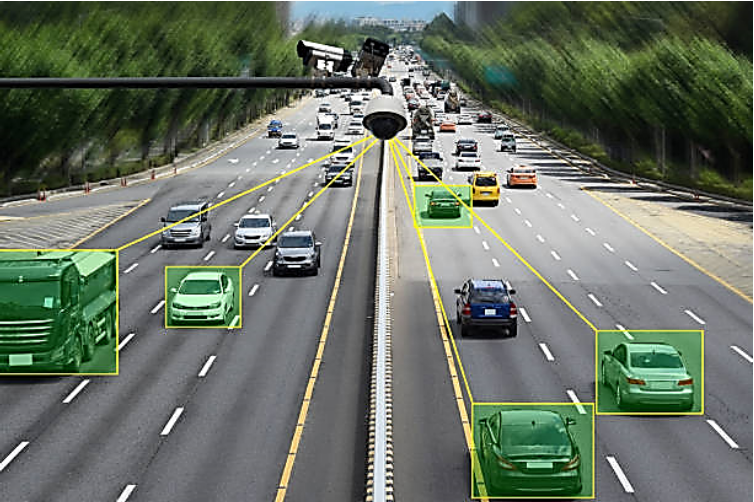

Giao thông vận tải thông minh & Hành trang đào tạo tại Sơn La
Công nghệ thông tin (CNTT) ngày càng đóng vai trò quan trọng trong lĩnh vực giao thông vận tải. Đây là ngành sử dụng các hệ thống máy tính, phần mềm và dữ liệu để quản lý, điều hành và tối ưu hóa hoạt động giao thông. Trước đây, giao thông chủ yếu được quản lý thủ công, phụ thuộc vào con người nên dễ xảy ra ùn tắc và thiếu chính xác. Tuy nhiên, từ khi xuất hiện các công nghệ hiện đại, đặc biệt trong bối cảnh Cách mạng công nghiệp 4.0, ngành giao thông đã có sự chuyển đổi mạnh mẽ sang mô hình giao thông thông minh (ITS - Intelligent Transport Systems).
Đây là hệ thống sử dụng camera, cảm biến và trí tuệ nhân tạo (AI) để theo dõi lưu lượng xe theo thời gian thực, tự động điều chỉnh thời gian đèn xanh – đỏ nhằm giảm ùn tắc tại các nút giao. Ví dụ: Khi một tuyến đường đông xe hơn, hệ thống sẽ kéo dài thời gian đèn xanh để giải tỏa lưu lượng nhanh hơn.

Hệ thống camera và cảm biến theo dõi lưu lượng giao thông
Các ứng dụng như Grab, Be,... là ví dụ điển hình của CNTT trong vận tải. Những ứng dụng này kết nối tài xế và hành khách thông qua điện thoại, sử dụng GPS để xác định vị trí, tính toán quãng đường và chi phí tự động. Nhờ đó, người dùng có thể đặt xe nhanh chóng, theo dõi hành trình và thanh toán tiện lợi.
Camera giám sát hành trình (hộp đen) gắn trên phương tiện
Đây là hệ thống gắn trên phương tiện (thường gọi là “hộp đen”) giúp theo dõi vị trí, tốc độ, lộ trình xe và ghi lại dữ liệu hành trình. Hệ thống này đặc biệt quan trọng đối với xe kinh doanh vận tải, giúp doanh nghiệp quản lý phương tiện hiệu quả và cơ quan chức năng đảm bảo an toàn giao thông.
Camera giám sát hành trình (hộp đen) gắn trên phương tiện
Ngành này bao gồm nhiều công việc ứng dụng công nghệ như phát triển phần mềm, xây dựng hệ thống giao thông thông minh (ITS), phân tích Big Data, thiết kế hệ thống định vị, và vận hành trung tâm điều khiển.
Hiện nay, CNTT trong giao thông đang phát triển mạnh với AI, IoT và Big Data. Nhiều thành phố đã triển khai camera giám sát, thu phí không dừng và trung tâm điều hành giao thông thông minh. Xu hướng tương lai sẽ hướng tới xe tự lái, giao thông xanh và tích hợp toàn bộ hệ thống vào nền tảng số.
Các cơ sở đào tạo thường áp dụng nhiều tổ hợp môn linh hoạt:
Mức điểm chuẩn tham khảo (Ngành CNTT):